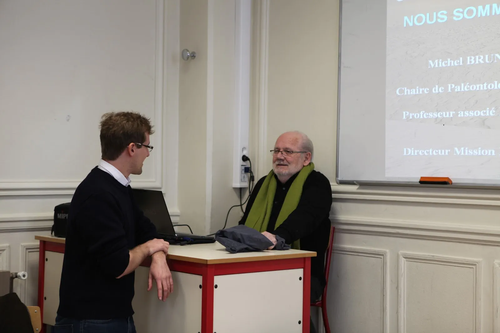

Avec Adrien, Michel Brunet, le découvreur de Toumaï (le plus ancien être humain, découvert en 2001 au Tchad) a organisé une rencontre des élèves du Lycée Rocroy St Léon et St Aspaix.
Un moment hors du temps, pour réfléchir sur nos origines !
